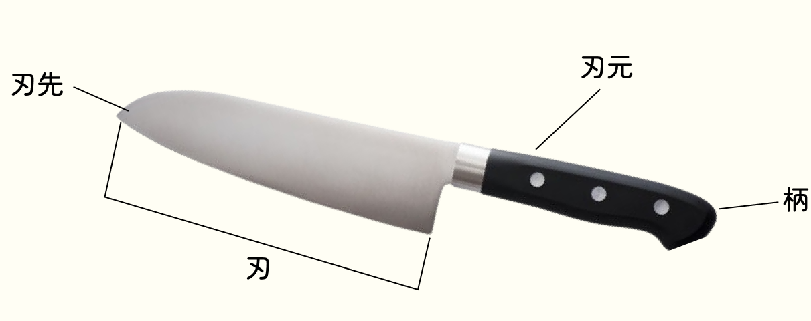
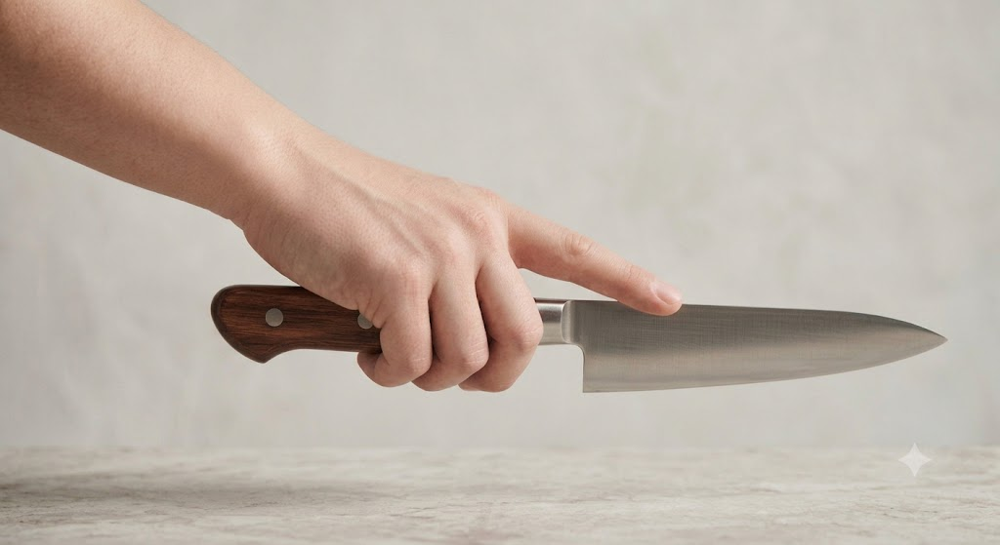
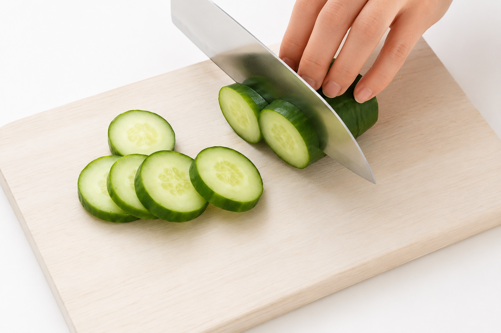
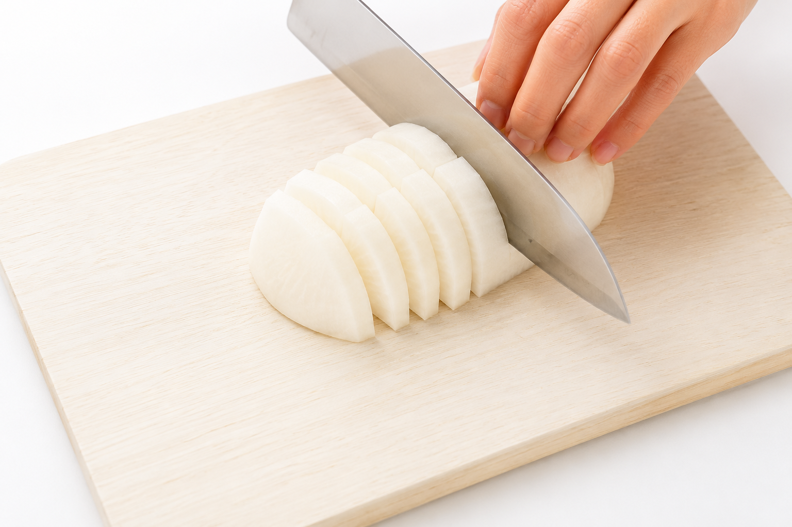
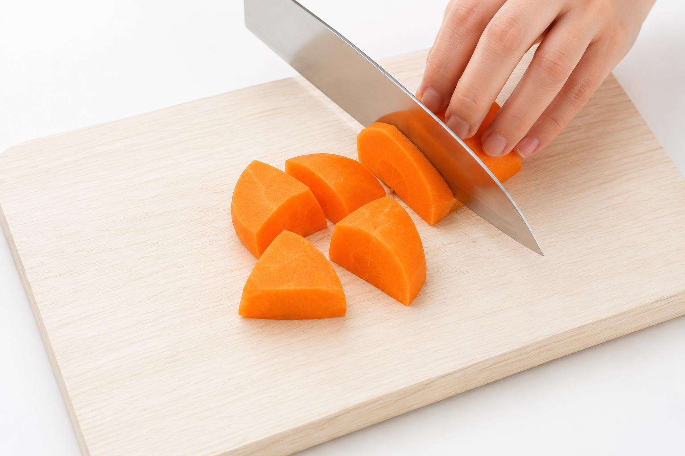
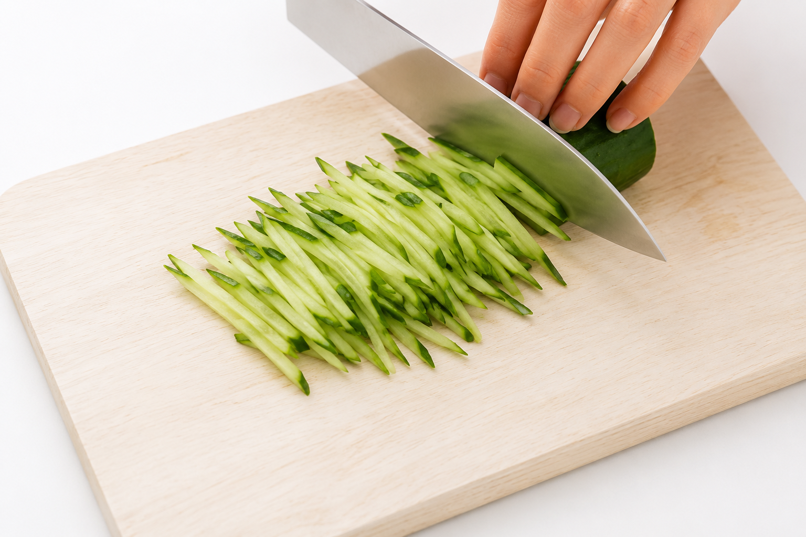
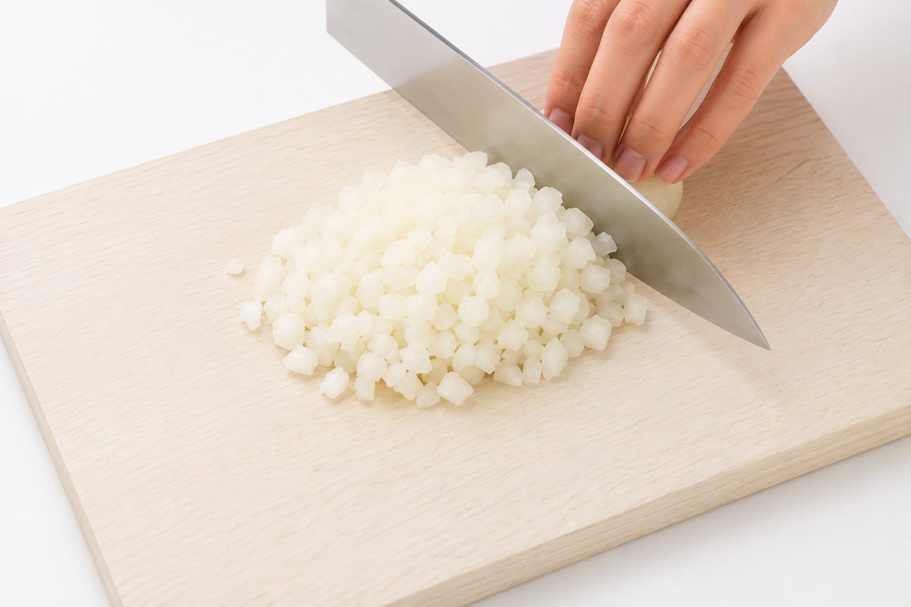
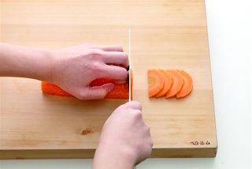

包丁の基本
包丁の各部の名前

◎包丁を使う時のポイント
- ☑ 姿勢をまっすぐにして使う
- ☑ まな板が動かないようにする
- ☑ 材料をしっかり押さえる
- ☑ 指を切らないように気を付ける
包丁の持ち方

柄をしっかり握り、人差し指を刃の付け根に添えるようにします。
力を入れすぎず、リラックスして握りましょう。
基本の切り方一覧
輪切り
材料を手前に引くようにして切ります。

おすすめ食材
ねぎ
なす
きゅうり
半月切り
輪切りにした材料を半分に切ります。

おすすめ食材
大根
きゅうり
玉ねぎ
いちょう切り
輪切りにしたものを四等分に切ります。

おすすめ食材
にんじん
大根
細切り
材料を手前に引くようにして切ります。

おすすめ食材
きゅうり
にんじん
ピーマン
みじん切り
材料を手前に引くようにして切ります。

おすすめ食材
玉ねぎ
ねぎ
パセリ
猫の手のやり方
猫の手とは、指先を軽く丸めて包丁の刃から指先を守る切り方です。
食材を押さえる手を「猫の手」にすると、指先を守って安全に切ることができます。

ポイント
包丁の刃に指を近づけすぎないようにしましょう。
食材はしっかり安定させましょう。
指先ではなく、第二関節を意識しましょう。
慣れるまでは慌てずゆっくり切りましょう。